대표작 01 · 교육 서비스 · 2023.06 — 2025.12
통통통
서비스 개편
- 1차 개편 디자인
- 70%
- 퍼블리싱
- 100%
훈장마을 개편에 이어 대교에듀베이션 교육 서비스를 2년 7개월간 연속으로 맡았습니다. 학원용 PC 관리자, 학원용 모바일, 학부모용 모바일까지 메인뿐 아니라 원생관리·조회·등록·마이페이지 등 다수의 서브페이지까지, 사용자와 디바이스별로 다른 화면을 하나의 규칙으로 퍼블리싱했고, 1차 서비스 개편에서는 화면 디자인의 70%를 직접 맡았습니다.
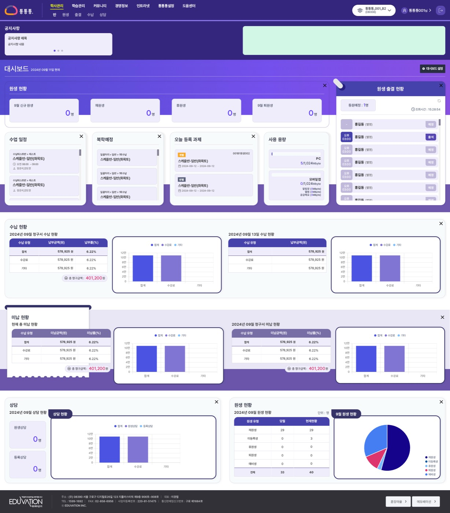
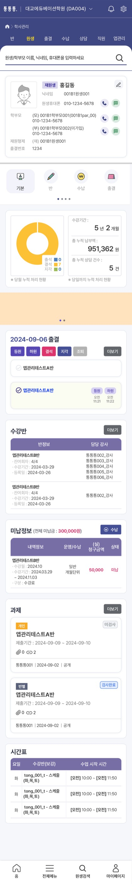
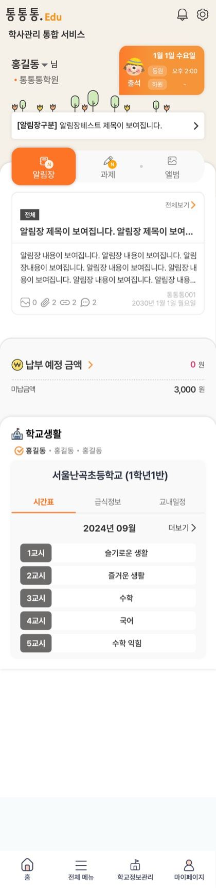
메인만이 아니라, 다수의 서브페이지까지
- PC · 원생관리
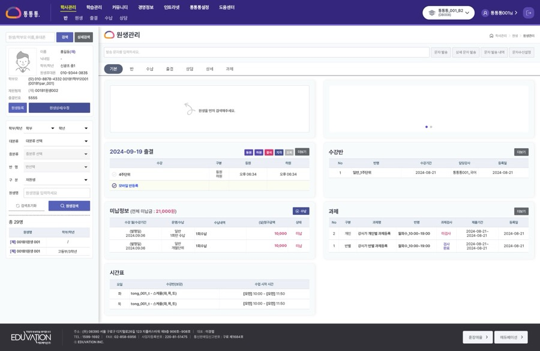
- PC · 조회
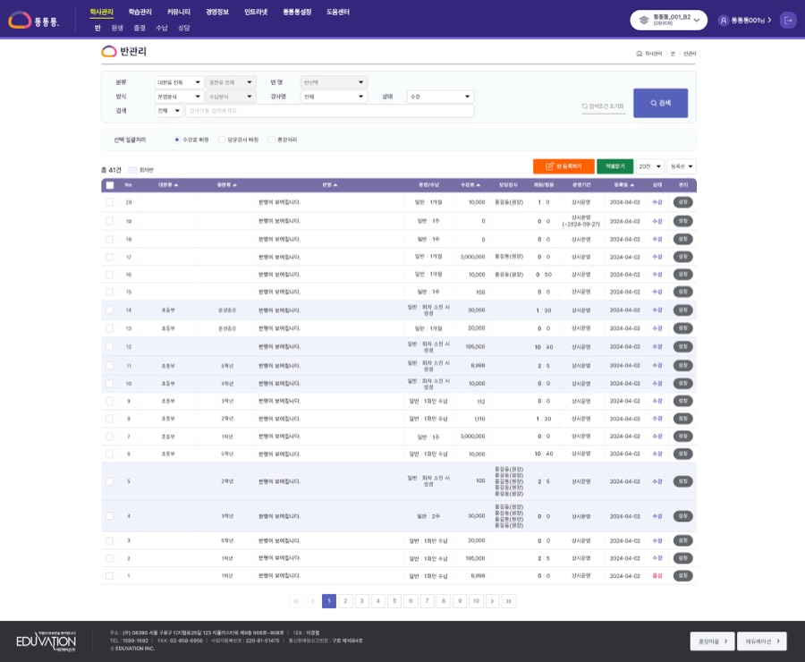
- PC · 등록폼
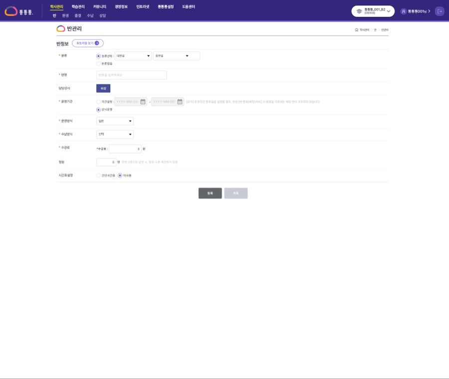
- 모바일 · 조회
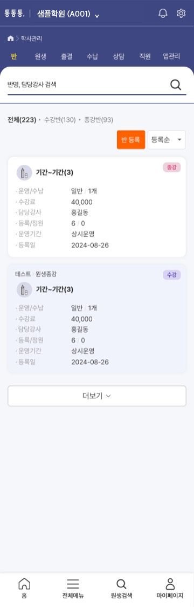
- 모바일 · 등록폼
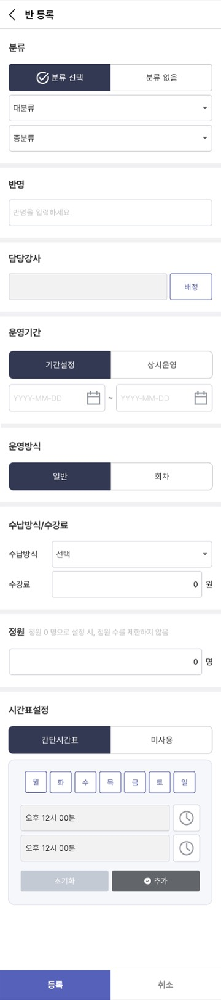
- 모바일 · 마이페이지
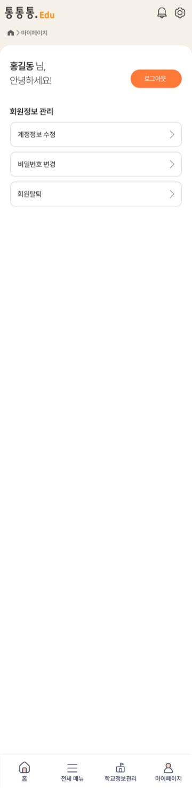
-
2023.06 — 2025.05
서비스 개편
PC·모바일 로그인, 웹·모바일 통합 로그인, 통합관리시스템 개설신청관리 화면
-
2025.05 — 2025.07
유료화
유료 서비스 전환에 필요한 화면
-
2025.11 — 2025.12
상품구조 고도화
디자인 시안을 받아 요금제, 부가서비스 신청, 결제정보 관리, 사업자 번호 검증 팝업 등 PC·모바일 화면 구현
상품구조 고도화 · 시안 구현 화면
퍼블리싱 페이지 목록 보기 (새 창)유료화·상품구조 고도화는 디자이너 시안을 받아 퍼블리싱했습니다.
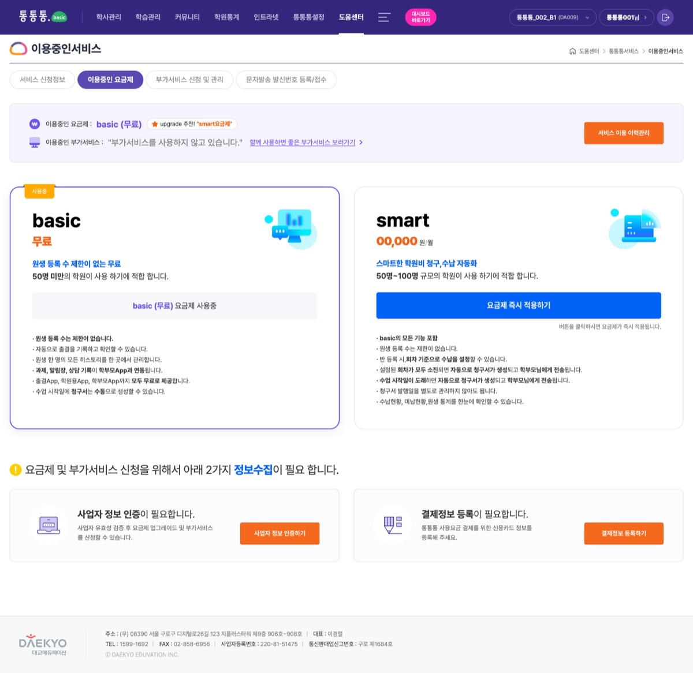
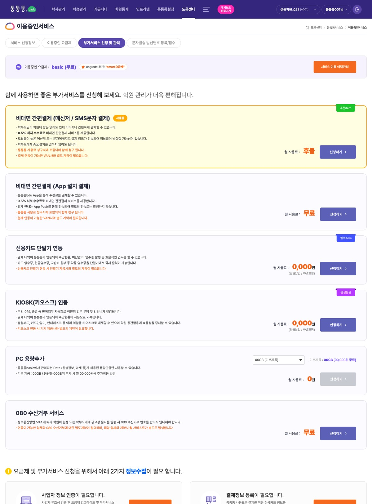
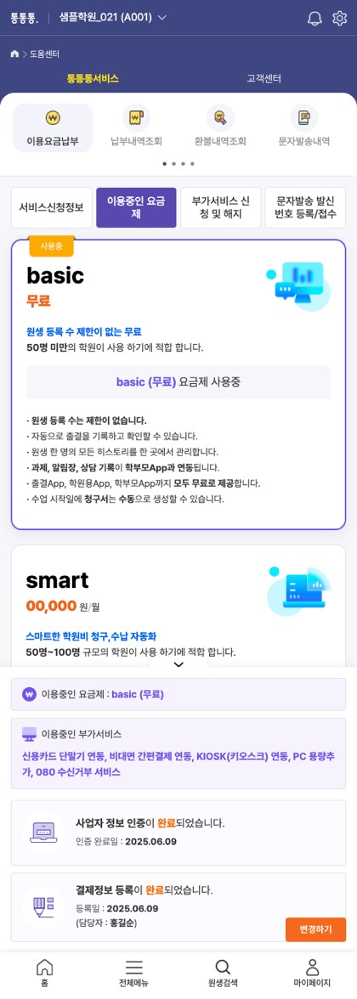
통합관리시스템 · 디자인·퍼블리싱
- 디자인
- 100%
- 퍼블리싱
- 100%
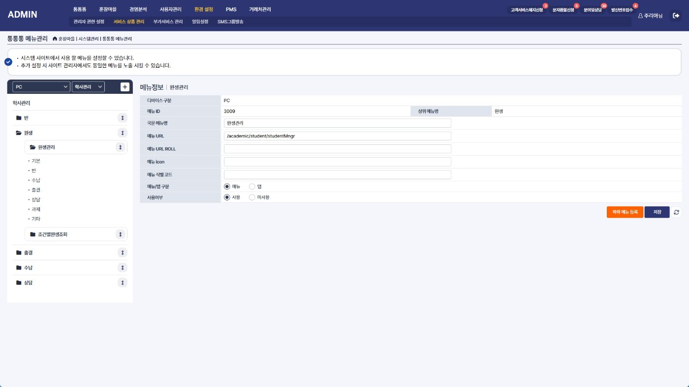
통통통을 운영하는 쪽에서 쓰는 통합관리시스템 화면을 같은 시기에 직접 디자인하고 퍼블리싱했습니다.
메뉴 트리, 정보 입력 폼, 버튼 크기와 색상을 공통 스타일 가이드로 정리해 여러 관리 화면이 같은 규칙을 따르도록 만들었습니다.